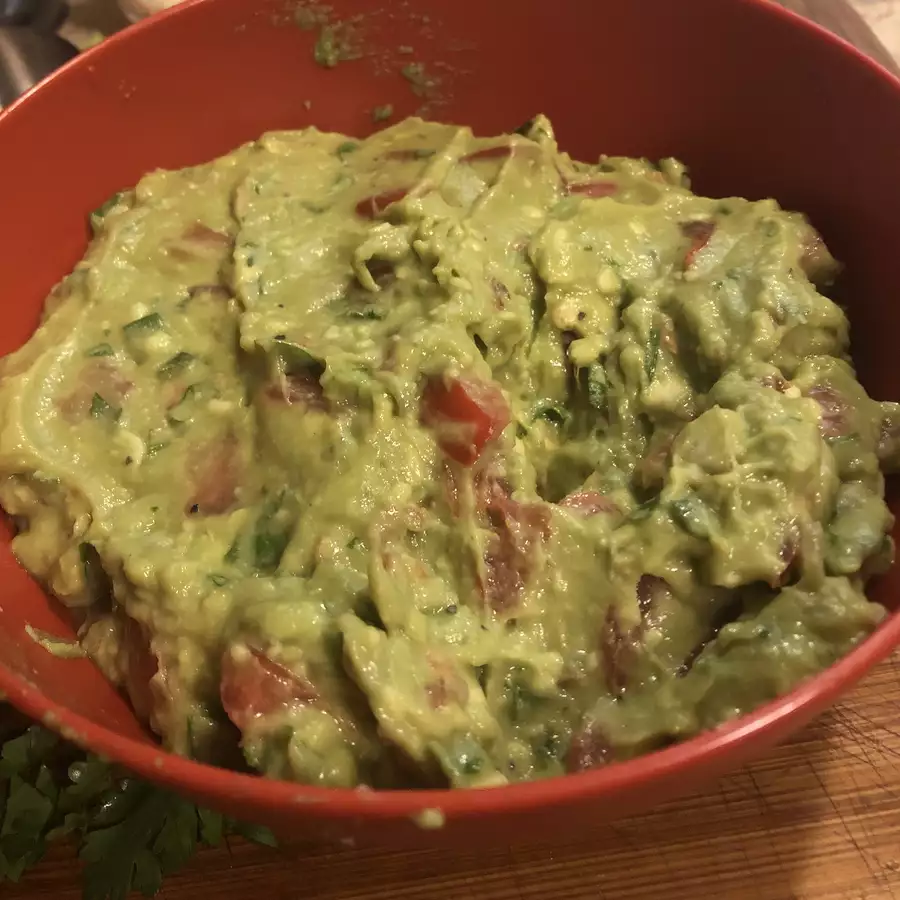

Guacamole Recipe

Image of traditional guacamole
This guacamole is great! Whether or not you want it spicy, this guacamole is a dip to die for!
Recipe by: Kaersten
Ingredients
- 2 avocados, peeled and pitted
- 1 cup chopped tomatoes
- ¼ cup chopped onion
- ¼ cup chopped cilantro
- 2 tablespoons lemon juice
- 1 jalapeno pepper, seeded and minced (Optional)
- salt and ground black pepper to taste